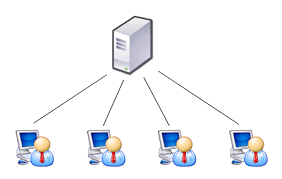
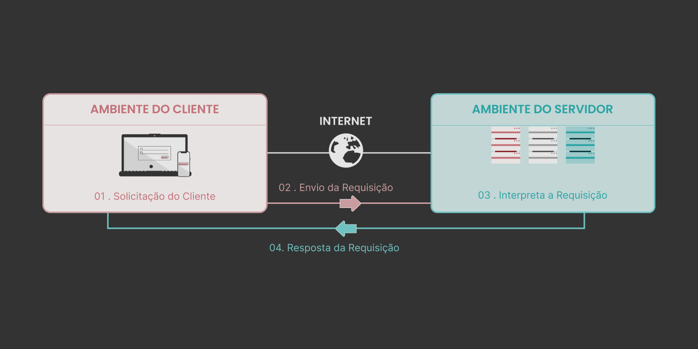

O Protocolo de Transferência de Hipertexto (HTTP) é a base da internet e é usado para carregar páginas web usando links de hipertexto
Quando você visita um site, o HTTP é usado para entregar o conteúdo dessa página, exibindo-a em seu navegador. Ele é um protocolo de solicitação-resposta que define como os clientes da Web se comunicam com os servidores da Web.O HTTP funciona em um modelo cliente-servidor, em que um cliente, geralmente um navegador web, faz solicitações a um servidor para obter recursos, como páginas da web, imagens ou arquivos.

Etapas que ocorrem nesse modelo:
Na web, a comunicação entre cliente e servidor ocorre por meio de duas ações principais: o request (solicitação) e a response (resposta)
Ao apertar enter após digitar um endereço no navegador, faz com que o navegador envie uma solicitação (request) para o servidor
Passo a passo que compoe esse processo:
Sem esse ciclo, não haveria uma comunicação eficaz entre o navegador e o servidor, pois ele é fundamental no desenvolvimento de aplicações que atendam às necessidades dos usuários de maneira ágil e confiável.
